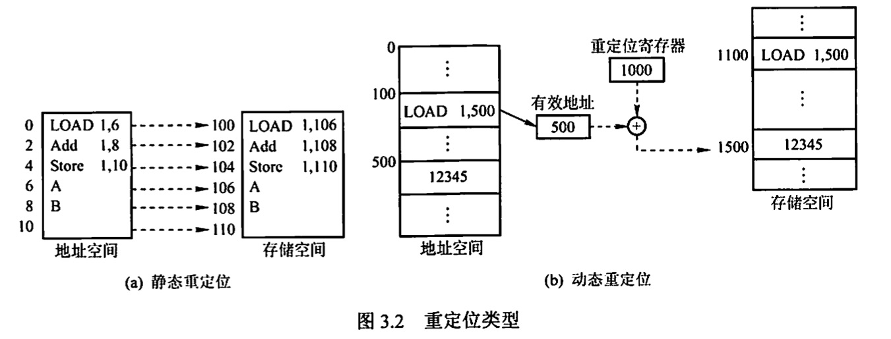
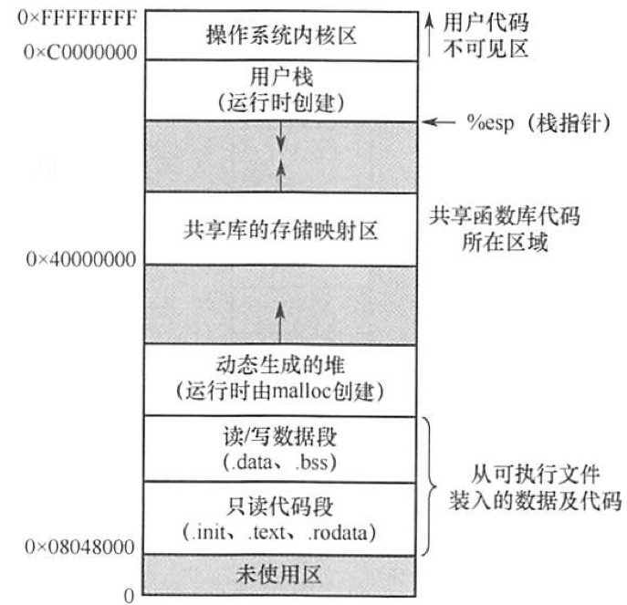
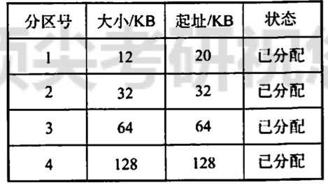
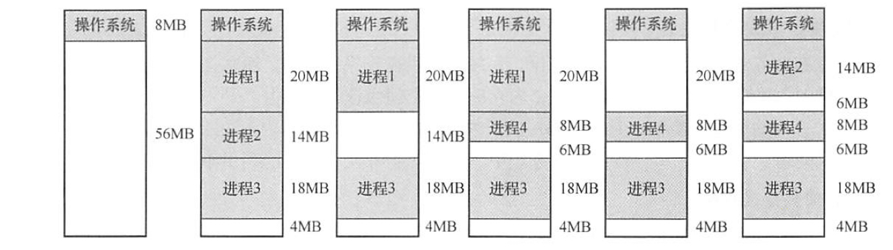
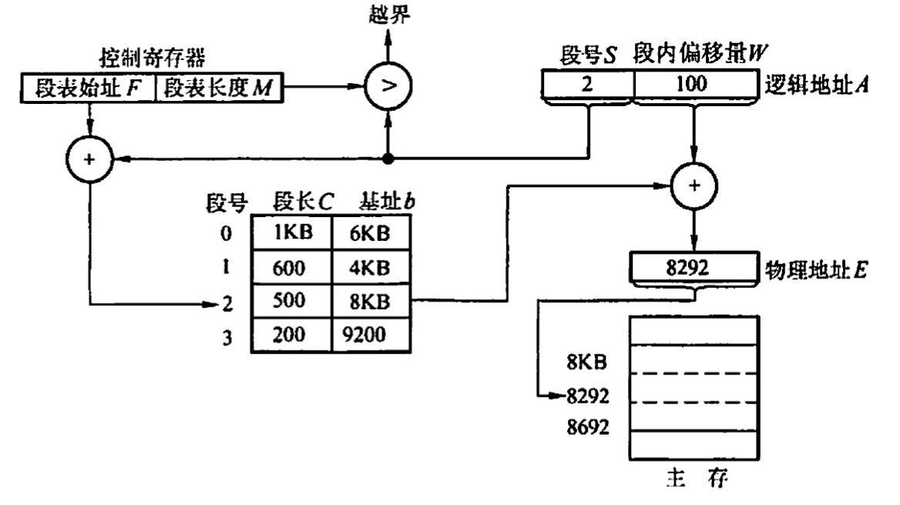
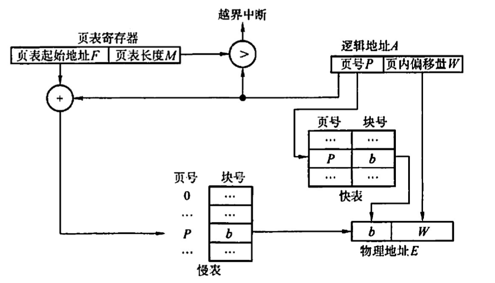

2022.12.21
内存管理概念内存管理的基本原理和要求程序的链接和装入进程的内存映像内存保护内存共享内存的分配与回收小结连续分配管理方式单一连续分配固定分区分配动态分区分配小结基本分页存储管理分页存储的几个基本概念基本地址变换机构具有快表的地址变换机构两级页表基本分段存储管理段页式管理题目总结
内存管理 （Memory Management）是操作系统设计中最重要和最复杂的内容之一。虽然计算机硬件技术一直在飞速发展，内存容量也在不断增大，但仍然不可能将所有用户进程和系统所需要的全部程序与数据放入主存，因此操作系统必须对内存空间进行合理的划分和有效的动态分配。操作系统对内存的划分和动态分配，就是内存管理的概念。
有效的内存管理在多道程序设计中非常重要，它不仅可以方便用户使用存储器、提高内存利用率，还可以通过虚拟技术从逻辑上扩充存储器。
内存管理的主要功能有：
在进行具体的内存管理之前，需要了解进程运行的基本原理和要求。
编译链接与装入
创建进程首先要将程序和数据装入内存。将用户源程序变为可在内存中执行的程序，通常需要以下几个步骤：
静态链接：
程序运行之前，先将各目标模块及它们所需的库函数链接成一个完整的装配模块，以后不再拆开。将几个目标模块装配成一个装入模块时，需要解决两个问题：①修改相对地址，编译后的所有目标模块都是从0开始的相对地址，当链接成一个装入模块时要修改相对地址。②变换外部调用符号，将每个模块中所用的外部调用符号也都变换为相对地址。
装入时动态链接：
将用户源程序编译后所得到的一组目标模块，在装入内存时，采用边装入边链接的方式。其优点是便于修改和更新，便于实现对目标模块的共享。
运行时动态链接：
对某些目标模块的链接，是在程序执行中需要该目标模块时才进行的。凡在执行过程中未被用到的目标模块，都不会被调入内存和被链接到装入模块上。其优点是能加快程序的装入过程，还可节省大量的内存空间。
绝对装入：
绝对装入方式只适用于单道程序环境。在编译时，若知道程序将驻留在内存的某个位置，则编译程序将产生绝对地址的目标代码。绝对装入程序按照装入模块中的地址，将程序和数据装入内存。由于程序中的逻辑地址与实际内存地址完全相同，因此不需对程序和数据的地址进行修改。 另外，程序中所用的绝对地址，可在编译或汇编时给出，也可由程序员直接赋予。而通常情况下在程序中采用的是符号地址，编译或汇编时再转换为绝对地址。
可重定位装入：
在多道程序环境下，多个目标模块的起始地址通常都从0开始，程序中的其他地址都是相对于起始地址的，此时应采用可重定位装入方式。根据内存的当前情况，将装入模块装入内存的适当位置。在装入时对目标程序中指令和数据地址的修改过程称为重定位，又因为地址变换通常是在进程装入时一次完成的，故称为静态重定位，如图 3.2(a）所示。 一个作业装入内存时，必须给它分配要求的全部内存空间，若没有足够的内存，则无法装入。此外，作业一旦进入内存，整个运行期间就不能在内存中移动，也不能再申请内存空间。
动态运行时装入：
也称动态重定位。程序在内存中若发生移动，则需要采用动态的装入方式。装入程序把装入模块装入内存后，并不立即把装入模块中的相对地址转换为绝对地址，而是把这种地址转换推迟到程序真正要执行时才进行。因此，装入内存后的所有地址均为相对地址。这种方式需要一个重定位寄存器的支持，如图 3.2（b)所示。 动态重定位的优点：可以将程序分配到不连续的存储区：在程序运行之前可以只装入部分代码即可投入运行，然后在程序运行期间，根据需要动态申请分配内存；便于程序段的共享．


确保每个进程都有一个单独的内存空间。内存分配前，需要保护操作系统不受用户进程的响，同时保护用户进程不受其他用户进程的影响。内存保护可采取两种方法：
1）在CPU 中设置一对上、下限寄存器，存放用户作业在主存中的下限和上限地址，每当CPU 要访问一个地址时，分别和两个寄存器的值相比，判断有无越界。
2）采用重定位寄存器（又称基地址寄存器）和界地址寄存器（又称限长寄存器）来实现这种保护。重定位寄存器含最小的物理地址值，界地址寄存器含逻辑地址的最大值。内存管理机构动态地将逻辑地址与界地址寄存器进行比较，若未发生地址越界，则加上重定位寄存器的值后映射成物理地址，再送交内存单元。
实现内存保护需要重定位寄存器和界地址寄存器，因此要注意两者的区别。重定位寄存器是用来“加”的，逻辑地址加上重定位寄存器中的值就能得到物理地址：界地址寄存器是用来“比”的，通过比较界地址寄存器中的值与逻辑地址的值来判断是否越界。
加载重定位寄存器和界地址寄存器时必须使用特权指令，只有操作系统内核才可以加载这两个存储器。这种方案允许操作系统内核修改这两个寄存器的值，而不允许用户程序修改。
不是所有的进程内存空间都适合共享，只有那些只读的区域才可以共享。可重入代码又称纯代码，是一种允许多个进程同时访问但不允许被任何进程修改的代码。但在实际执行时，也可以为每个进程配以局部数据区，把在执行中可能改变的部分复制到该数据区，这样，程序在执行时只需对该私有数据区中的内存进行修改，并不去改变共享的代码。
下面通过一个例子来说明内存共享的实现方式。考虑一个可以同时容纳 40 个用户的多用户系统，他们同时执行一个文本编辑程序，若该程序有160KB 代码区 和40KB 数据区，则共需8000KB的内存空间来支持 40 个用户。如果 160KB 代码是可分享的纯代码，则不论是在分页系统中还是在分段系统中，整个系统只需保留一份副本即可，此时所需的内存空问仅为 40KBx40 + 160KB = 1760KB。对于分页系统，假设页面大小为 4KB，则代码区占用 40 个页面、数据区占用 10个页面。为实现代码共享，应在每个进程的页表中都建立 40 个页表项，它们都指向共享代码区的物理页号。此外，每个进程还要为自己的数据区建立 10 个页表项，指向私有数据区的物理页号。对于分段系统，由于是以段为分配单位的，不管该段有多大，都只需为该段设置一个段表项（指向共享代码段始址，以及段长 160KB）。由此可见，段的共享非常简单易行。
此外，在第2章中我们介绍过基于共享内存的进程通信，由操作系统提供同步互斥工具。在本章的后面，还将介绍一种内存共享的实现——内存映射文件。
存储管理方式随着操作系统的发展而发展。在操作系统由单道向多道发展时，存储管理方式便由单一连续分配发展为固定分区分配。为了能更好地适应不同大小的程序要求，又从固定分区分配发展到动态分区分配。为了更好地提高内存的利用率，进而从连续分配方式发展到离散分配方式——页式存储管理。引入分段存储管理的目的，主要是为了满足用户在编程和使用方面的要求，其中某些要求是其他几种存储管理方式难以满足的。
精要总结
编译链接与装入
- 编译：源代码变成机器码（很多模块）
- 链接：很多模块组成一个整体
- 装入：整体装入内存
链接方式
- 静态链接：组成不可变化的整体（相对地址从0开始）
- 装入时动态链接：装入时动态链接（顾名思义）
- 运行时动态链接：程序执行时动态链接
装入方式
- 绝对装入：逻辑地址与实际内存地址完全相同。“一就是一，二就是二，这不是欺负老实人嘛”
- 可重定位装入：静态重定位，地址变换装入时一次完成
- 动态运行时装入：动态重定位，可以将程序分配到不连续的存储区，需要重定位寄存器
进程的内存映像
- 代码段：只读
- 数据段：全局变量与静态变量
- PCB
- 堆：malloc，从低地址向高地址
- 栈：函数，从高地址向低地址
内存保护
- 上、下限寄存器：p∈[a,b]
- 重定位寄存器（基地址寄存器）、界地址寄存器（限长寄存器）：p∈[a,a+n]
内存共享
- 共享“纯代码”，数据部分在自己的进程中。共享的代码系统仅存一份，每个进程的页表项指向共享区域
内存的分配与回收
内存在此方式下分为系统区和用户区，系统区仅供操作系统使用，通常在低地址部分；在用户区内存中，仅有一道用户程序，即整个内存的用户空间由该程序独占。 这种方式的优点是简单、无外部碎片，无须进行内存保护，因为内存中永远只有一道程序。缺点是只能用于单用户、单任务的操作系统中，有内部碎片，存储器的利用率极低。
固定分区分配是最简单的一种多道程序存储管理方式，它将用户内存空间划分为若干固定大小的区域，每个分区只装入一道作业。当有空闲分区时，便可再从外存的后备作业队列中选择适当大小的作业装入该分区，如此循环。在划分分区时有两种不同的方法。
这种方式存在两个问题：一是程序可能太大而放不进任何一个分区，这时就需要采用覆盖技术来使用内存空间；二是当程序小于固定分区大小时，也要占用一个完整的内存分区，这样分区内部就存在空间浪费，这种现象称为内部碎片。固定分区是可用于多道程序设计的最简单的存储分配，无外部碎片，但不能实现多进程共享一个主存区，所以存储空间利用率低。
在固定分区分配中，为了便于分配，建立一张分区使用表，通常按分区大小排队，各表项包括每个分区的起始地址、大小及状态（是否已分配）。分配内存时，检索分区使用表，找到一个能满足要求且尚未分配的分区分配给装入程序，并将对应表项的状态置为“已分配”，若找不到这样的分区，则拒绝分配。回收内存时，只需将对应表项的状态置为“未分配”即可。
分区说明表举例：

又称可变分区分配，它是在进程装入内存时，根据进程的实际需要，动态地为之分配内存，并使分区的大小正好适合进程的需要。因此，系统中分区的大小和数目是可变的。
如图所示，系统有 64MB 内存空间，其中低 8MB 固定分配给操作系统，其余为用户可用内存。开始时装入前三个进程，它们分别分配到所需的空间后，内存仅剩 4MB，进程4 无法装入。在某个时刻，内存中没有一个就绪进程，CPU 出现空闲，操作系统就换出进程2，换入进程4。由于进程4 比进程2小，这样在主存中就产生了一个6MB 的内存块。之后 CPU 又出现空闲，需要换入进程2，而主存无法容纳进程2，操作系统就换出进程 1，换入进程2。

动态分区在开始时是很好的，但随着时间的推移，内存中会产生越来越多小的内存块，内存的利用率也随之下降。这些小的内存块称为外部碎片，它存在于所有分区的外部，这与固定分区中的内部碎片正好相对。克服外部碎片可以通过紧凑技术来解决，即操作系统不时地对进程进行移动和整理。但这需要动态重定位奇存器的支持，且相对费时。 紧凑的过程实际上类似于 Windows系统中的磁盘碎片整理程序，只不过后者是对外存空间的紧凑在进程装入或换入主存时，若内存中有多个足够大的空闲块，则操作系统必须确定分配哪个内存块给讲程使用这就是动态分区的分配策略考虑以下几种算法：
在动态分区分配中，与固定分区分配类似，设置一张空闲分区链（表)，并按始址排序。分配内存时，检索空闲分区链，找到所需的分区，若其大小大于请求大小，便从该分区中按请求大小分割一块空间分配给装入进程（若剩余部分小到不足以划分，则无须分割），余下部分仍留在空闲分区链中。回收内存时，系统根据回收分区的始址，从空闲分区链中找到相应的插入点，此时可能出现四种情况：
①回收区与插入点的前一空闲分区相邻，将这两个分区合并，并修改前分区表项的大小为两者之和
②回收区与插入点的后一空闲分区相邻，将这两个分区合并，并修改后一分区表项的始址和大小
③回收区同时与插入点的前、后两个分区相邻，此时将这三个分区合并，修改前一分区表项的大小为三者之和，取消后一分区表项
④回收区没有相邻的空闲分区，此时应为回收区新建一个表项，填写始址和大小，并插入空闲分区链。
精要总结：
单一连续分配：单道程序，内部碎片
固定分区分配：最简单的多道程序，内部碎片
动态分区分配：外部碎片
- 首次适应(First Fit) 算法
- 邻近适应(Next Fit) 算法:（从上次查找结束的位置继续查找的First Fit）
- 最佳适应(Best Fit)算法：找最小块
- 最坏适应(Worst Fit) 算法：找最大块
内部碎片 外部碎片 固定分区分配 是 否 可变分区分配 否 是 页式分配 是 否 段式分配 否 是 段页式分配 是 否（内存被分成了页框
页面和页面大小
页号 = 逻辑地址 / 页面长度
页内偏移量 = 逻辑地址 % 页面长度
物理地址 = 页面始址 + 页内偏移量
逻辑地址 = [页号(k位)，页内偏移量(m位)]
页面数量 = 2^k个
页面大小 = 2^m个内存单元
[页号(k位)，页内偏移量(m位)] -> 拿到前k位，去找页表换成页面始址。

快表内部是页表的一些数据的备份。快表加入后，CPU查询页表前，先查快表（也可能快表页表一起查）。
注意：访问快表（未命中）+访问页表+访问内存，然后将页表内容复制到快表中。这个过程是两次访存，如果快表命中，可以节约一次访存时间。

单级页表存在什么问题？
问题一：页表必须连续存放，因此当页表很大时，需要占用很多个连续的页框。 问题二：没有必要让整个页表常驻内存，因为进程在一段时间内可能只需要访问某几个特定的页面
两级页表的原理、逻辑地址结构？
如何实现地址变换？
使用的时候，一级页号去找页目录表，得到页表地址然后拿二级页号去找物理地址，然后那物理地址加上页内偏移量。
分页分段的优缺点
段页式管理的方法
先分段，每段再分页
逻辑地址：[段号 | 页号 | 页内偏移量]
其中用户编程的角度看，页号+页内偏移量组成了段内地址。是系统对段内地址进行了分页，分页过程用户不可见。
在可变分区分配方案中，某一进程完成后，系统回收其主存空间并与相邻空闲区含并，为此需修改空闲区表，造成空闲区数减1的情況是（）。 A. 无上邻空闲区也无下邻空闲区 B. 有上邻空闲区但无下邻空闲区 C. 有下邻空闲区但无上邻空闲区 D. 有上邻空闲区也有下邻空闲区
答案：【D】。空闲区数减1，说明前后都有空闲区。
（）方式可以采用静态重定位
A 固定分区 B 可变分区 C 页式 D 段式
答案：【A】
不会产生内部碎片的是（）
A 分页 B 分段 C 段页 D 固定
答案：【B】
分页就会有内部碎片
重定位存做管理方式，应（）。 A. 在整个系统中设置一个重定位寄存器 B. 为每道程序设置一个重定位寄存器 C.为每道程序设置两个重定位寄存器 D.为每道程序和数据都设置一个重定位寄存器
答案：【A】
对外存对换区的管理应以（），为主要目标： A 提高系统吞吐量 B. 提高存储空间的利用率 C.降低存储费用 D.提高换入、换出速度
答案：【D】
引入段式存体管理方式，主要是为了更好地满足用户的一系列要求。下西选项中不属于这一系列要求的是（）. A. 方便操作 C共享和保护 B方便编程 D.动态链接和增长
答案：【A】引入段式存储管理方式，主要是为了满足用户的下列要求：方便编程、分段共享、分段保护、动态链接和动态增长。
（）存储管理方式提供一维地址结构。 A. 分段 B.分页 C.分段和段页式 D. 以上答案都不正确
答案：【B】分页存储管理中，作业地址空间是一维的，即单一的线性地址空间，程序员只需要一个记忆符来表示地址。在分段存储分配管理中，段之间是独立的，而且段长不定长，而页长是固定的因此作业地址空间是二维的，程序员在标识一个地址时，既需给出段名，又需给出段内地址。简言之，确定一个地址需要几个参数，作业地址空间就是几维的。
操作系统来用分页存储管理方式（）。 A. 每个进程拥有一张页表，且进程的页表驻留在内存中 B. 每个进程拥有一张页表，但只有执行进程的页表驻留在内存中 C.所有进程共享一张页表，以节约有限的内存空间，但页表必须驻留在内存中 D.所有进程共享一张页表，只有页表中当前使用的页面必须驻留在内存中，以最大限度地节省有限的内存空间
答案：【A】
以下存储管理方式中，会产生内部碎片的是(）。 I. 分段虛拟存储管理 II. 段页式分区管理 III. 分页虛拟存储管理 IV. 固定式分区管理 答案：【2，3，4】
【2009统考真题】分区分配内存管理方式的主要保护措施是（）。 A. 界地址保护 B. 程序代码保护 C. 数据保护 D. 栈保护
答案：【A】
【2011统考真题】在虚拟内存管理中，地址变换机构将逻辑地址变换为物理地址，形成概逻辑地址的阶段是（）
答案：【链接阶段】
https://www.nowcoder.com/questionTerminal/49f353d2fd124c5ba66e32f90587da5c
【2014年统考真题】写列选项中，属于多级页表的优点的是
A. 加快地址变换速度
B. 减少却也中断次数
C. 减少页表项所展字节数
D. 减少也表所占的连续内存空间
答案：【C】
【2019 统考真题】在分段存储管理系统中，用共享段表描迷所有被共享的段。若进程P1和P2,共享段S，则下列叙述中，错误的是（）。 A. 在物理内存中仅保存一份段S的内容 B. 段S在P1和P2中应该具有相同的段号 C. P1和已共享段S在共享段表中的段表项 D. P1和P2都不再使用段S时才回收段S 所占的内存空间
答案：【B】
段的共享是通过两个作业的段表中相应表项指向被共享的段的同一个物理副本来实现的，因此在内存中仅保存一份段S的内容，A正确。段S对于进程P，P,来说，使用位置可能不同，所以在不同进程中的逻辑段号可能不同，B错误。段表项存放的是段的物理地址（包括段姶址和段长度），对于共享段§来说物理地址唯一，C正确。为了保证进程可以顺利使用段S，段S必须确保在没有任何进程使用它（可在段表项中设置共享进程计数）后才能被删除，D正确。
段号是逻辑地址对应过来的
段表项是表明物理地址的